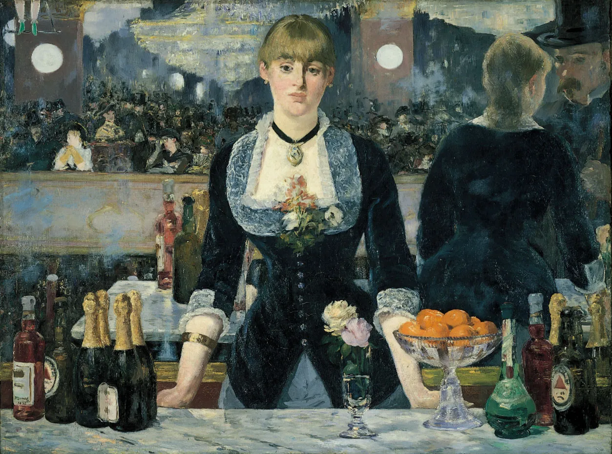
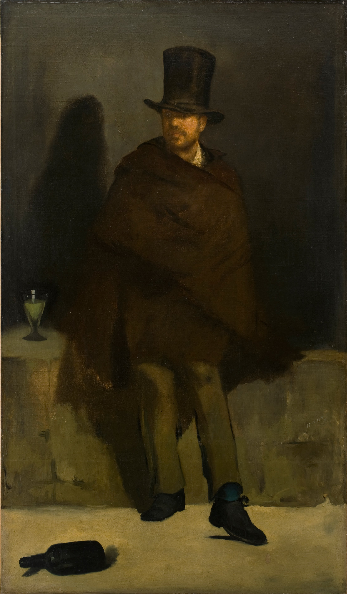

Introduction and Social/Intellectual Context
The mid-19th century brought with it new interpretations of the purpose of art. Prior to this period, art was deeply connected with religion and politics under the Old Master tradition, with a majority of popular artworks being commissioned by religious and political institutions. However, the introduction of Realism, Impressionism, and the avant-garde art movement signaled a monumental shift in the collective understanding of the purpose of art; during this transformational era, the idea of l'art pour l'art (art for art’s sake) gained popularity among European (specifically French) painters. Ultimately, the emergence and proliferation of the concept of l'art pour l'art revealed a profound shift in the purpose of art and artistic expression.
The notion of l'art pour l'art was strongly influenced by philosopher Immanuel Kant’s aesthetic theory;1 the Enlightenment thinker headed the Aestheticism movement, arguing that art should be perceived through judgements of beauty rather than judgements of interest:
Interest is what we call the liking we connect with the presentation of an object's existence. Hence such a liking always refers at once to our power of desire, either as the basis that determines it, or at any rate as necessarily connected with that determining basis. But if the question is whether something is beautiful, what we want to know is not whether we or anyone cares, or so much as might care, in any way, about the thing's existence, but rather how we judge it in our mere contemplation of it (intuition or reflection).2
This belief that art should be judged based on subjective experience rather than personal interest, socio-political utility, or desire provided the foundations for l'art pour l'art. French writer and art critic Théophile Gautier used this Aestheticist framework to argue for the freedom of artistic expression, claiming that artists should not be responsible for advancing public morality.3 He furthered this Aestheticist position by asserting that utility does not equate to beauty when he wrote that “Il n’y a de vraiment beau que ce qui ne peut servir à rien; tout ce qui est utile est laid, car c’est ; expression de quelque besoin, et ceux de l’homme sont ignobles et dégoûtants, comme sa pauvre et informe nature.” (“Nothing is really beautiful unless it is useless; everything useful is ugly, for it expresses a need, and the needs of man are ignoble and disgusting, like his poor weak nature.”)4 Gautier’s position as a well-known and respected art critic strongly influenced French artists of the 19th century, leading to the popularity of l'art pour l'art at the time.
19th century French Realism exemplifies the transition between social art and l'art pour l'art. This artistic movement was a form of social art in that it sought to “convey a truthful and objective vision of contemporary life”5 in 19th century France through depictions of the working class. Realism was marked by a pronounced social awareness that served as a response to the emerging class divides and socioeconomic inequalities following the Industrial Revolution, the “Haussmannization” of Paris,6 and the French Belle Époque era; Realist artists used everyday scenes and subjects to comment on the new social realities and the “charged social issue[s] of the moment”.7 In addition to representing the social and political currents of France in the 19th century, French Realism served as an early form of l'art pour l'art because it aimed to accurately and authentically depict reality without moral obligations. These unembellished depictions broke away from previous artistic traditions that prioritized idealized forms; in portraying some of the more mundane or darker features of modern French life, Realism art hinted at l'art pour l'art because it ignored previous notions of what should be painted. Overall, French Realism was social in that it was concerned with depicting social and political realities, but it was also a form of l'art pour l'art because it rejected idealism, allowing for more artistic freedom.
French artist Édouard Manet best demonstrates the Realist movement’s progression towards l'art pour l'art. He began his career as a Realist artist, but incorporated Impressionist elements in his later work, illustrating the growing influence of l'art pour l'art and the changing understandings of the purpose of art at the time. Early-20th century art critic Camille Mauclair applauded Manet for his unique style and highlighted Manet as the artist that established the Impressionist movement:
There remains then a great personality, who knew how to dominate the rather coarse conceptions of realism ; who influenced by his modernity all contemporary illustration ; who re-established a strong and sound condition in the face of the Academy ; and who not only created a new transition, but marked his place on the new roach which he had opened.
To him, [I]mpressionism owes its existence; his tenacity enabled it to take root … his work has enriched the world by some beautiful examples, which demonstrate the union of the two principles of [R]ealism [and] of that technical [I]mpressionism.8
This convergence of Realism and Impressionism present in Manet’s work set the stage for the broader French Impressionist movement and growth of l'art pour l'art during the late-19th century. Specifically, Manet’s last major painting A Bar at the Folies-Bergère epitomizes this synthesis of Realist and Impressionist elements and displays the pinnacle of his abilities. Ultimately, the composition of Manet’s final masterpiece A Bar at the Folies-Bergère fluctuates between Realism and Impressionism, providing a prime example of the French artistic movement towards l'art pour l'art.
Creation and Characteristics
A Bar at the Folies-Bergère was Manet’s last major work, and it was painted and exhibited at the Paris Salon in 1882. Manet visited the Folies-Bergère — a music and party venue at the heart of Parisian social life during the Belle Époque era — to create preliminary sketches of the painting.9 The painting depicts a woman standing behind a bar in the Folies-Bergère, leaning on her palms and addressing a customer. She has rosy cheeks, blonde hair, as well as an exhausted (sometimes read as “austere”10) expression on her face that provides a “provocative mystique” to her character.11 This barmaid is wearing gold jewelry and a dark blue velvet blouse with white lace detailing. A small vase of flowers, a bowl of oranges, and a variety of wines and liquors sit on the marble counter in front of her. A large mirror behind the bar depicts the lively scene in front of the barmaid; French socialites gather under a large chandelier and an acrobat hangs from the ceiling. The mirror also reveals that a customer, standing in the position of the viewer, is speaking to the barmaid. Contemporary radiography testing on the painting has shown that the composition of the oil painting has gone through multiple revisions: the barmaid’s hands were originally crossed in front of her stomach12 and her reflection has been altered.13 Overall, the composition of A Bar at the Folies-Bergère uses both Realist and Impressionist techniques to depict the stark contrast between the innocent, exhausted barmaid and the party in front of her.

A Bar at the Folies-Bergère is a Realist painting in that it authentically depicts Parisian life, making a social commentary on the new class that emerged during the French Belle Époque era. French Realism attempted to “create objective representations of the external world based on the impartial observation of contemporary life”.14 Manet employed Realist methods by using actual models for his work; the barmaid in the final iteration of the painting was a real woman named Suzon who worked at the Folies-Bergère.15 The representation of the exhausted barmaid is Realist in that it is unembellished and signals to the new challenges of modern city life. Manet’s painting rejects the idealization and glorification of Suzon, and instead emphasizes the Realist principle of painting the objective truth. The catalog of the 1882 Salon describes this Realist manner, stating that the painting has “pas un brin de beauté, mais du naturel, de la gaieté, de la lumière, de l'adresse, des lazzis, des crudités, des coquetteries” (“not a bit of beauty, but naturalness, cheerfulness, light, skill, nonsense, crudities, coquetry”).16 Thus, the composition of A Bar at the Folies-Bergère is Realist in that it draws from modern city life to portray an ordinary working class woman without idealizing her, juxtaposing Suzon’s fatigue with the extravagant festivities in front of her to highlight the vastly different realities of modern Parisian life in the 19th century.
Despite having its roots in Realism, the composition of A Bar at the Folies-Bergère utilizes Impressionist motifs and techniques, contributing to the establishment of French Impressionist art in the late-19th century. In comparison to his earlier artworks such as The Absinthe Drinker painted in 1859, Manet’s later works signals a shift away from Realism through his use of lighter palettes and a looser brush strokes, which were artistic elements characteristic of Impressionism. Furthermore, the subjective, inconsistent perspective of A Bar at the Folies-Bergère shows Manet’s Impressionist tendencies; art critics Thierry de Duve and Brian Holmes argue that the position and reflection of the mirror is incorrect when they write that “the painting’s construction is aberrant with regard to commonsense or ‘realistic’ assumptions about the depiction of perceived space”.17 Art historian James D. Herbert builds on this common belief and asserts that this apparent deviation from Realism is deliberate, noting that these “perspectival inconsistencies of the reflection in the mirror—aspects of A Bar at the Folies-Bergère that have been thoroughly rehearsed in the literature on the picture—defy established conventions of mimesis” because they produce an illusory effect that mimics the feeling of being in the Folies-Bergère.18 Thus, the inconsistent optics of A Bar at the Folies-Bergère is purposeful and Impressionistic in nature. Additionally Manet’s use of fragmentation in the composition of the painting reveals his movement towards Impressionism and l'art pour l'art. The trapeze artist in the upper left corner of the painting is cut out of the frame; Manet only shows the trapezist’s legs in order to depict movement, which was a compositional technique used to highlight the “momentary qualities of [Impressionist artists’] perceptions”.19 Additionally, Manet also uses fragmentation by estranging the viewer; the viewers of the painting only see themselves (as the customer) through a mirror. French philosopher Michel Foucault argues that Manet’s choice to alienate the viewer challenges preconceived notions of the relationship between the observer and the subject, describing this fragmentation as “a representational play of the fundamental material elements of the canvas”;20 A Bar at the Folies-Bergère puts the viewer in place of the customer, using Impressionist compositional methods in order to push the viewer to reconsider the subjective nature of perception. These compositional uses of intentional cuts and fragmentations create a sense of randomness, signaling to viewers that chance – rather than social forces – structure the picture. Ultimately, A Bar at the Folies-Bergère’s Impressionist elements of subjective perspective and fragmentation highlight Manet’s artistic freedom, displaying his tendency to lean towards l'art pour l'art in his later works.

Social Function and Responses
Throughout his career, Manet’s artwork was both praised and criticized; he showed his paintings in both the Paris Salon and Salon des Refusés, which displays the controversial nature of his blending of Realist and Impressionist styles. The fact that A Bar at the Folies-Bergère was exhibited in the 1882 Paris Salon shows that it was well-received by critics at the time because it made it past the jury of art professors from the French Academy.21 Art critics at the 1882 salon were fascinated by the Impressionist ambiguity of Suzon’s expression: one critic perceived the barmaid to have an “air embêté” (“annoyed look”), whereas another critic assessed her as being “bien vivante” (“truly alive”).22 This experimental blend of Realism and Impressionism was dubbed a “brillante et fraîche palette” (“brilliant and fresh palette)23 of not just colors, but of artistic styles and understandings of the purpose of art. Overall, the critics of the Salon were so impressed by A Bar at the Folies-Bergère’s Impressionist characteristics that it described Manet as “le maître [I]mpressionniste” (“the master Impressionist”)24 in the 1882 Salon catalog.
Furthermore, A Bar at the Folies-Bergère has continued to be applauded and appreciated by contemporary art historians and theorists, and it has been canonized “as one of their heroic and exalted monuments”.25 These contemporary thinkers have added to understandings of the painting through recontextualizations that interpret A Bar at the Folies-Bergère through a modern lens; for example, Impressionist scholar Ruth E. Iskin’s sociological gendered take on the painting interprets Suzon as a prostitute who is selling herself through her alienation as the only person in front of the viewer.26 Similarly, art historian Bradford Collins curates a variety of modern interpretations – ranging from feminist persepctives to Lacanian psychoanalysis – of the painting in his collection Twelve Views of Manet’s Bar, showcasing the various ways that contemporary intellectual theory can be applied to A Bar at the Folies-Bergère.
Manet’s later artwork served a social purpose in that it established the foundations for the rise of Impressionism. Despite not officially exhibiting with other Impressionist artists in the Paris Salon des Refusés, Manet’s later paintings served as a leading precedent for the new movement.27 Manet’s fascination with Parisian city life translated over into the Impressionist art movement, and later Impressionist artwork also exhibited this interest in modern subjects (as seen in Auguste Renoir’s Young Girl in a Pink-and-Black Hat painted in 1891 and Camille Pissarro’s La Place du Théâtre Français painted in 1898). Ultimately, Manet’s union of Realist and Impressionist elements layed the groundwork for late-19th century Impressionism, and this fascinating combination of artistic styles continues to be examined in contemporary contexts.


Conclusion
In summary, Manet’s fluctuations between Realism and Impressionism in A Bar at the Folies-Bergère reveals the increased focus on artistic expressionism during the 19th century and signals a shift in the understanding of the purpose of art from art as a social practive to l'art pour l'art. Despite Manet’s allusions to the class tensions between the barmaid and the Folies-Bergère partygoers, the use of irrational perspective and the fragmented composition of the painting makes it an Impressionist painting. The painting’s subjective elements show Manet’s inclination towards l'art pour l'art, with Manet himself purportedly noting that “no one can be a painter unless he cares for painting above all else”;28 this emphasis on artistic expression over social or political obligation shows Manet’s understanding that the purpose of art is l'art pour l'art. His incorporation of Impressionism in his later works shaped the works of his successors, and “his bold manner with paint inspired the future [I]mpressionists”.29 In conclusion, Manet developed A Bar at the Folies-Bergère in dialogue with Impressionism, balancing the painting’s Realist elements with a composition that laid the groundwork for the rise of Impressionism and l'art pour l'art.